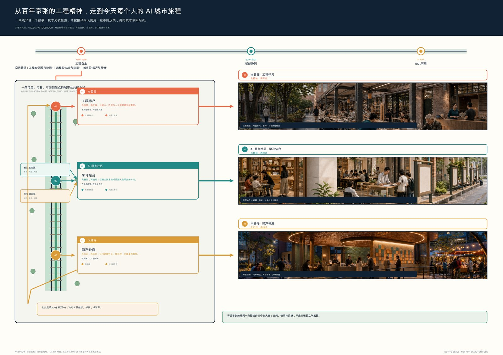
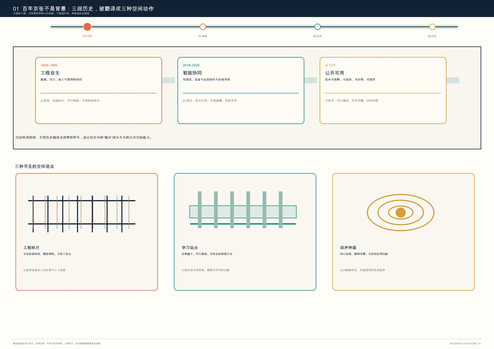
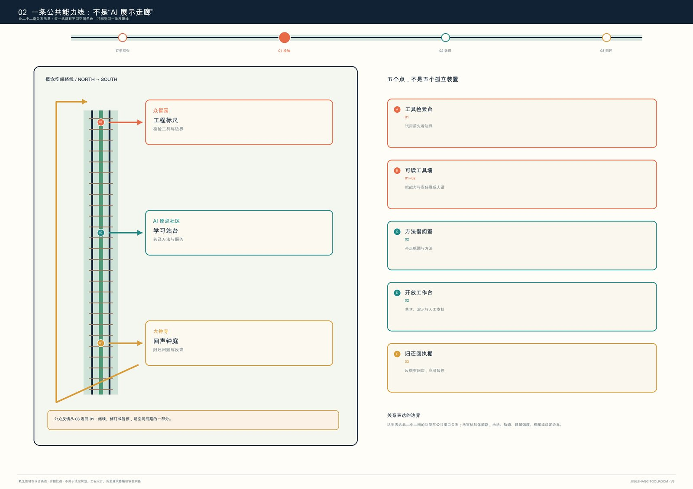
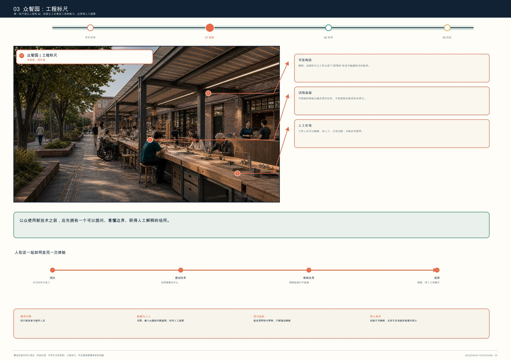
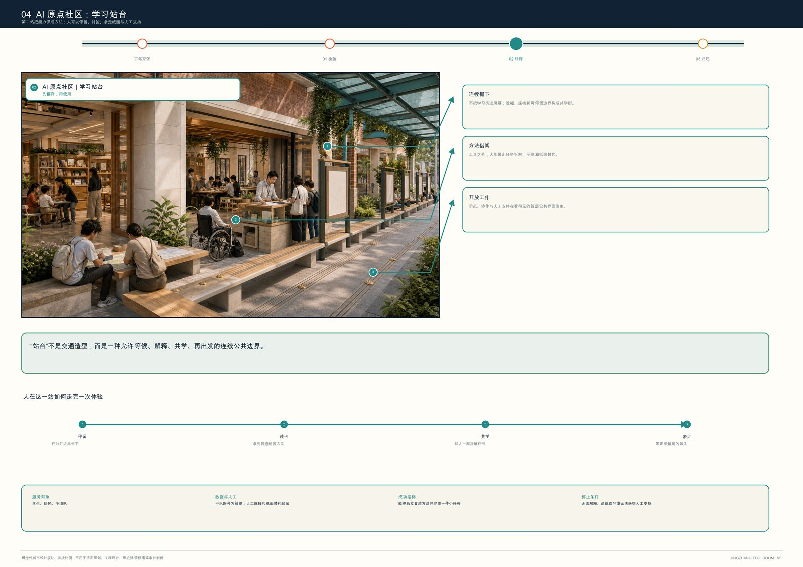
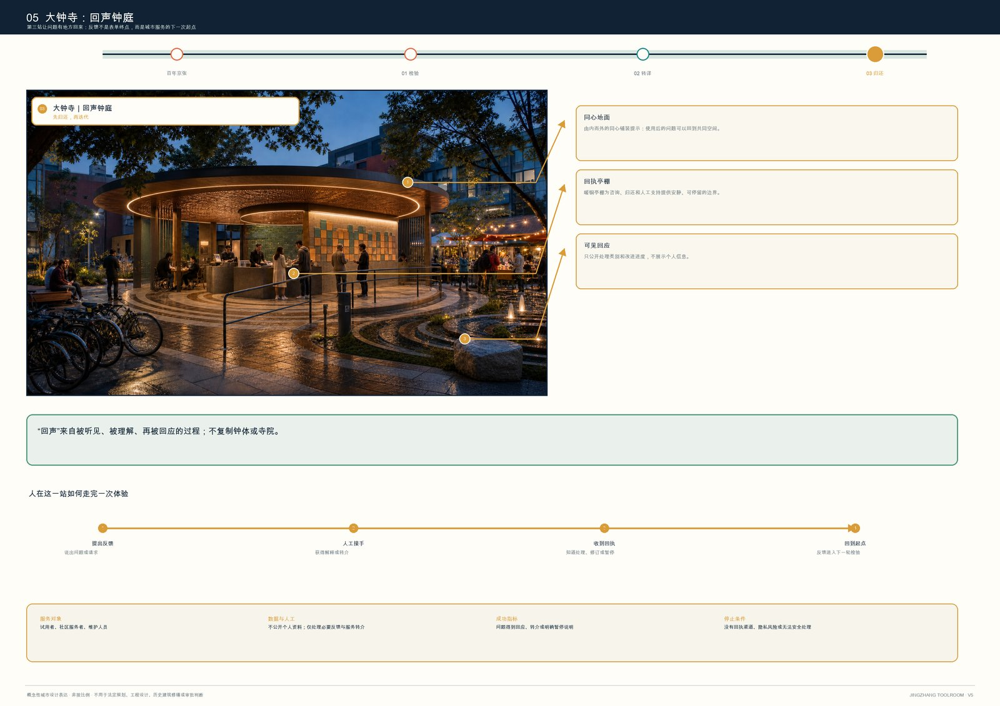
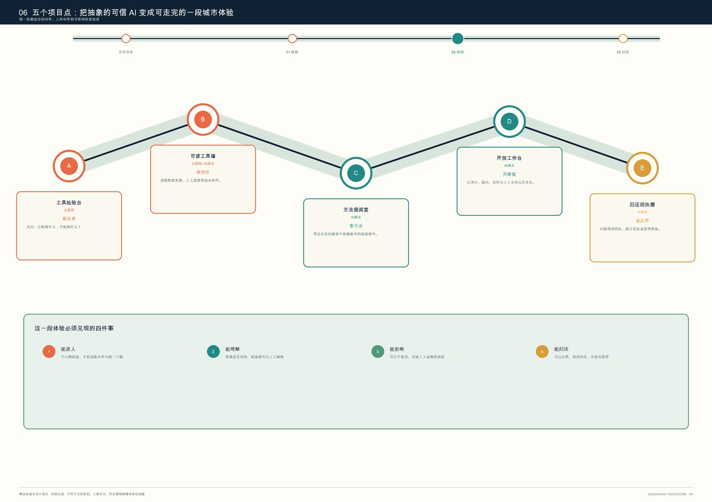
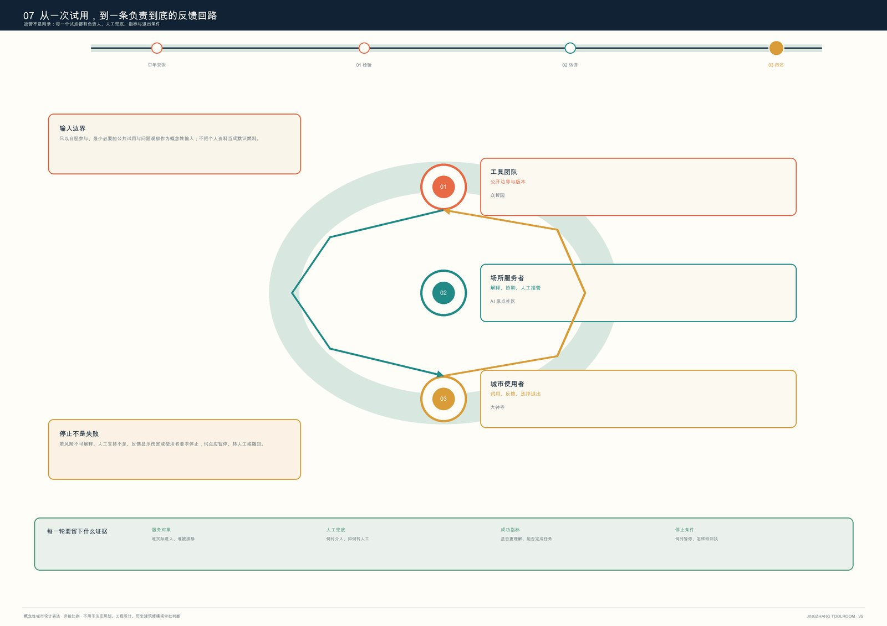

00 总体叙事总板
历史引子、公共能力线、三处场景与反馈回路在同一阅读路径中完成。
技术先被检验，才被翻译给人使用；城市反馈再把技术带回起点。
下载完整 A3 视觉册（8 页 PDF）11,412,825.386 sqm 仅由包内 official_boundary=false 的临时示意轮廓复算，数据置信度为 medium，仅供图层一致性核验，不是官方面积或法定依据。
历史引子、公共能力线、三处场景与反馈回路在同一阅读路径中完成。

工程标尺、学习站台、回声钟庭：不贴符号，只转译公共经验。

三个重点区、五个项目点和一条返回起点的反馈线。

让能力、边界与人工接管先被公众看见。

把陌生技术变成可停留、可解释、可带走的方法。

让问题被听见、被处理，也让公众可以要求暂停。

把可信 AI 变成一段能进入、能理解、能拒绝、能归还的城市体验。

每个试点都有责任角色、人工兜底、成功指标和停止条件。